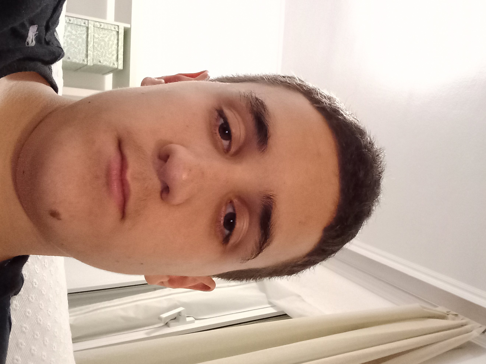
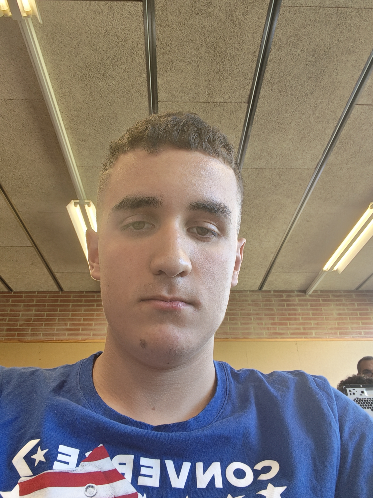
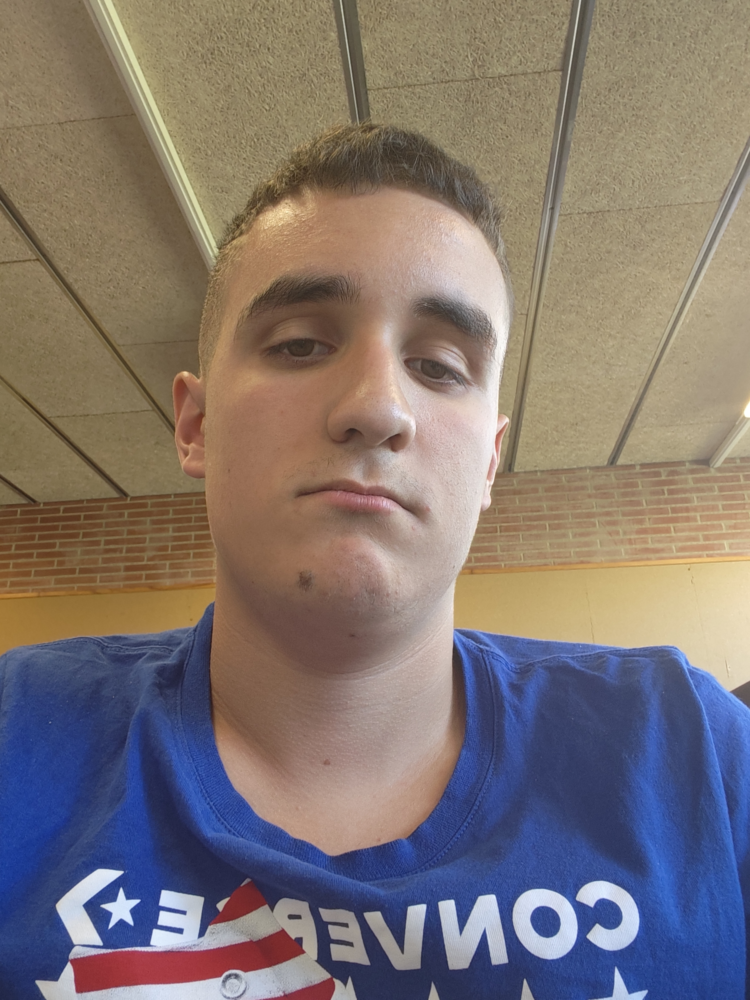

Dades sobre mi
Vaig Neixer l'any 2010 i tinc 16 anys, ara mateix visc a Fraga majoritariament, però avegades visito al meu pare, als avis o als tiets que viuen a Lleida
També en tinc interes i considero que és important l'aprenentatge que fare a programació, o per saber utilitzar el word, excel etc... i també curiositat en la tecnologia en si.
Els meus gustos
Jo en tinc diversos gustos o coses que m'agraden a la vida aquestos són uns exemples:
La programació d'ordinadors, també m'agrda aprendre sobre com utilitzar el word perquè el considero important i m'agrada el muntatge i manteniment dels ordinadors
Les meves aficions
m'grada utilitzar l'ordinador, també jugar videojocs a la video consola com el fifa, m'agrada també veure anime al mobil i per ultim m'agrada veure futbol i soc de l'Inter de Milà
enllaç a google